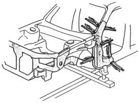
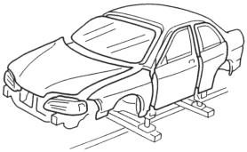
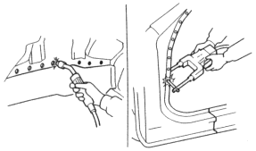
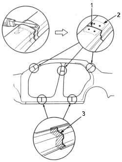

- Check the tack weld at positions of the new parts.
- Clamp the new part and check the position of it using the body dimensional drawings (see section 4).
- Tack weld the clamped section.
|
To prevent eye injury and burns when welding, wear an approved welding helmet, gloves and safety shoes. |
 WARNING
WARNING
- Check the alignment of the exterior body parts.
- Temporary install the exterior body parts, windshield and rear window glass, and check for differences in level and clearances.
NOTE: Check the fit of the front fender, door and the rear fender, and make sure the body lines flow smoothly.

- Main weld the repair parts.
|
To prevent eye injury and burns when welding, wear an approved welding helmet, gloves and safety shoes. |
- Make 20% to 30% more spot welds than there were holes drilled.
- A new welding position should avoid an old position as much as possible.
NOTE: If there is not room for spot welds, compensate by using MIG welds
- The electric continuity property of zinc-plated steel plate is different from ordinary steel plate. When spot welding, increase the current by 10-20%, or increase the resistance welding line.

- Fillet weld the repair outer side sill it will overlap by 30 mm (1.2 in.) in the front and back.
- Butt weld the front pillar, centre pillar, rear pillar and the wheel arch cut sections of the repaired outer panel.
NOTE: Attach the patches at the cut sections of the outer panel and plug weld them.

- BUTT WELD
- PATCH
- FILLET WELD